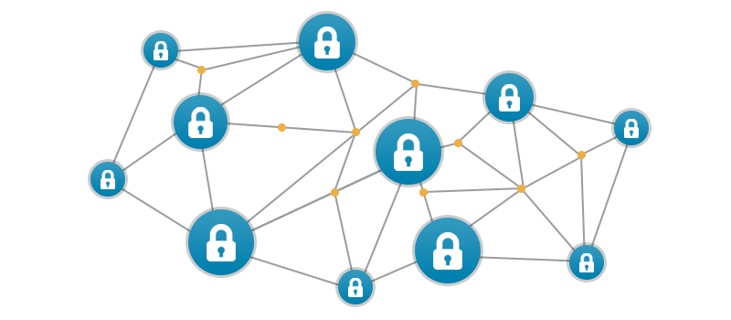
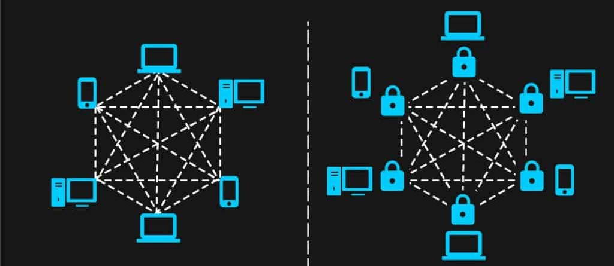

Tipos de blockchain
Blockchain pública
Este fue el primer tipo de blockchain que existió, y se refiere a las blockchains que se encuentran públicamente accesible desde Internet. Un ejemplo de este tipo de blockchain son Bitcoin, Ethereum, Dash, Monero o Zcash. Este tipo de blockchain mantienen abierto al público sus datos, el software y su desarrollo, de forma que cualquier persona puede revisar, auditar, desarrollar o mejorar los mismos.
Para lograr esto, las blockchain públicas tienen medidas de seguridad que garantizan que ningún actor malicioso pueda fácilmente alterar el funcionamiento de la misma. Es ahí donde entran en acción la tolerancia a fallas bizantinas en la programación, protocolos de consenso robustos, protecciones DDoS o contra ataques de 51% o doble gasto.
Blockchain privada o permisionada
Esta unidad central es la que permite dar acceso a los usuarios, además de controlar sus funciones y permisos dentro de la blockchain. Generalmente son opciones de desarrollo de tipo software privativo, aunque también hay desarrollos de software libre. Uno de los desarrollos de blockchain privadas más importantes del mundo criptográfico es Hyperledger. Este proyecto iniciado por la Fundación Linux y varias empresas del sector tecnológico es el mayor ejemplo de blockchain privada. También podemos mencionar el caso de Corda de R3 o Quorum de JPMorgan

Blockchain híbrida o federada
Este tipo de blockchain es una fusión entre las blockchain públicas y las privadas. Es un intento de aprovechar lo mejor de ambos mundos. En estas blockchain, la participación en la red es privada. Es decir, el acceso a los recursos de la red es controlado por una o varias entidades. Sin embargo, el libro de contabilidad es accesible de forma pública. Esto significa que cualquier persona puede explorar bloque a bloque todo lo que sucede en dicha blockchain.
